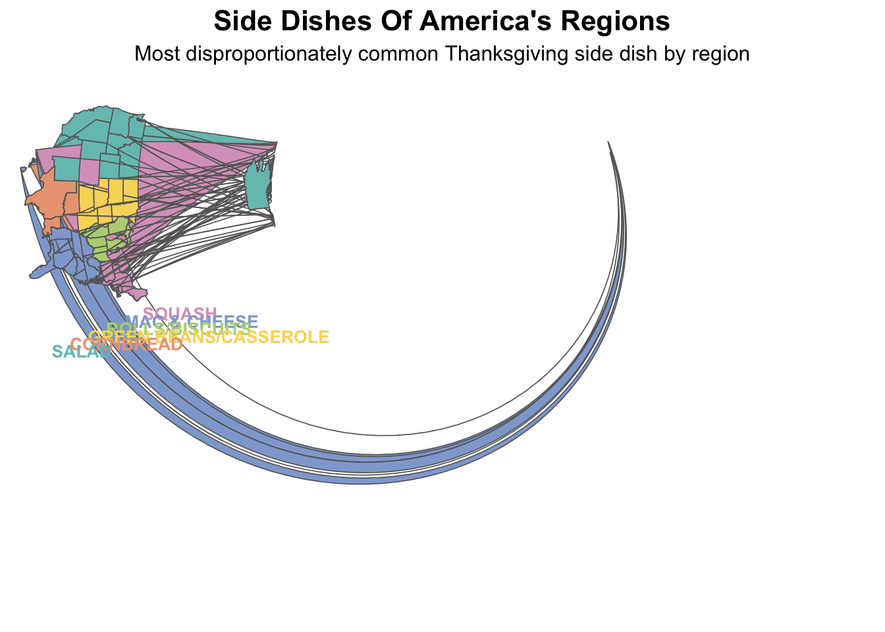

I wanted to challenge myself to become better at making maps, since this is an area that I need improvement on. I chose a fun article about Americans’ favorite thanksgiving side dishes. Here’s the original plot I will attempt to recreate.
To start, I’ll load packages and data.
library(tidyverse)
── Attaching core tidyverse packages ──────────────────────── tidyverse 2.0.0 ──
✔ dplyr 1.1.4 ✔ readr 2.1.5
✔ forcats 1.0.0 ✔ stringr 1.5.1
✔ ggplot2 3.5.1 ✔ tibble 3.2.1
✔ lubridate 1.9.4 ✔ tidyr 1.3.1
✔ purrr 1.0.2
── Conflicts ────────────────────────────────────────── tidyverse_conflicts() ──
✖ dplyr::filter() masks stats::filter()
✖ dplyr::lag() masks stats::lag()
ℹ Use the conflicted package (<http://conflicted.r-lib.org/>) to force all conflicts to become errors
library(here)
here() starts at /Users/annalisecramer/MADA/annalisecramer-MADA-portfolio-main/annalisecramer-MADA-portfolio
New names:
Rows: 1058 Columns: 65
── Column specification
──────────────────────────────────────────────────────── Delimiter: "," chr
(64): Do you celebrate Thanksgiving?, What is typically the main dish at... dbl
(1): RespondentID
ℹ Use `spec()` to retrieve the full column specification for this data. ℹ
Specify the column types or set `show_col_types = FALSE` to quiet this message.
• `Which of these side dishes aretypically served at your Thanksgiving dinner?
Please select all that apply. - Other (please specify)` -> `Which of these
side dishes aretypically served at your Thanksgiving dinner? Please select
all that apply. - Other (please specify)...25`
• `Which of these side dishes aretypically served at your Thanksgiving dinner?
Please select all that apply. - Other (please specify)` -> `Which of these
side dishes aretypically served at your Thanksgiving dinner? Please select
all that apply. - Other (please specify)...26`
• `Which type of pie is typically served at your Thanksgiving dinner? Please
select all that apply. - Other (please specify)` -> `Which type of pie is
typically served at your Thanksgiving dinner? Please select all that apply. -
Other (please specify)...38`
• `Which type of pie is typically served at your Thanksgiving dinner? Please
select all that apply. - Other (please specify)` -> `Which type of pie is
typically served at your Thanksgiving dinner? Please select all that apply. -
Other (please specify)...39`
• `Which of these desserts do you typically have at Thanksgiving dinner? Please
select all that apply. - Other (please specify)` -> `Which of these desserts
do you typically have at Thanksgiving dinner? Please select all that apply.
- Other (please specify)...50`
• `Which of these desserts do you typically have at Thanksgiving dinner? Please
select all that apply. - Other (please specify)` -> `Which of these desserts
do you typically have at Thanksgiving dinner? Please select all that apply.
- Other (please specify)...51`
Here’s my final plot. I used a color picker app to get the right colors, but the yellow and tealstill looks a little bit too pale.
After several hours, I cannot figure out how to get Alaska and Hawaii. Some of my attempts are pictured further down in this document.
library(ggplot2)library(dplyr)library(maps)
Attaching package: 'maps'
The following object is masked from 'package:purrr':
map
library(mapdata)# Define region colors and labelsregion_data <-data.frame(state =tolower(c("Maine", "New Hampshire", "Vermont", "Massachusetts", "Rhode Island", "Connecticut", "New York", "New Jersey", "Pennsylvania", "Wisconsin", "Michigan", "Illinois", "Indiana", "Ohio", "North Dakota", "South Dakota", "Nebraska", "Kansas", "Minnesota", "Iowa", "Missouri", "Delaware", "Maryland", "Virginia", "West Virginia", "North Carolina", "South Carolina", "Georgia", "Florida", "Kentucky", "Tennessee", "Mississippi", "Alabama", "Oklahoma", "Texas", "Arkansas", "Louisiana", "Montana", "Idaho", "Wyoming", "Nevada", "Utah", "Colorado", "Arizona", "New Mexico", "Washington", "Oregon", "California", "Alaska", "Hawaii")),region =c(rep("SQUASH", 6), # New Englandrep("SQUASH", 3), # Middle Atlanticrep("ROLLS/BISCUITS", 5), # East North Centralrep("GREEN BEANS/CASSEROLE", 7), # West North Centralrep("MAC & CHEESE", 8), # South Atlanticrep("MAC & CHEESE", 4), # East South Centralrep("CORNBREAD", 4), # West South Centralrep("SALAD", 13)), # Mountain & Pacificcolor =c(rep("#D9A2C4", 6), # Pink (SQUASH)rep("#D9A2C4", 3), # Pink (SQUASH)rep("#B6D382", 5), # Lime Green (ROLLS/BISCUITS)rep("#F8D867", 7), # Yellow (GREEN BEANS/CASSEROLE)rep("#90A9D5", 8), # Blue (MAC & CHEESE)rep("#90A9D5", 4), # Blue (MAC & CHEESE)rep("#EBA482", 4), # Red-Orange (CORNBREAD)rep("#77C2BE", 13)) # Teal (SALAD))# Get US map dataus_states <-map_data("state")# Merge map data with region datamap_data <-left_join(us_states, region_data, by =c("region"="state"))# Update legend_data to wrap textlegend_data <-data.frame(dish =c("SQUASH", "MAC & CHEESE", "ROLLS/ BISCUITS", "GREENBEANS/ CASSEROLE", "CORNBREAD", "SALAD"),color =c("#D9A2C4", "#90A9D5", "#B6D382", "#F8D867", "#EBA482", "#77C2BE"),x =c(-73, -80, -83, -104, -96, -132), # Customize x positions for each labely =c(49, 31, 48, 51, 27.5, 44) # Customize y positions for each label)# Wrap the dish names to two lineslegend_data$dish <-str_wrap(legend_data$dish, width =10) # Adjust 'width' to control wrapping# Plot the map with wrapped labelsggplot(map_data, aes(long, lat, group = group, fill = color)) +geom_polygon(color ="grey65", size =0.3) +scale_fill_identity() +coord_map("albers", lat0 =25, lat1 =50) +# Curved map projectiongeom_text(data = legend_data, aes(x = x, y = y, label = dish, color = color),inherit.aes =FALSE,hjust =0,size =3.5,fontface ="bold") +scale_color_identity() +ggtitle("Side Dishes Of America's Regions") +labs(subtitle =expression(atop("Most disproportionately common Thanksgiving side dish by region",atop("\u2015\u2015\u2015\u2015\u2015\u2015\u2015\u2015\u2015\u2015\u2015\u2015\u2015\u2015\u2015\u2015\u2015\u2015\u2015\u2015\u2015\u2015\u2015\u2015\u2015\u2015\u2015\u2015\u2015\u2015\u2015\u2015\u2015\u2015\u2015\u2015\u2015\u2015\u2015\u2015\u2015\u2015\u2015\u2015\u2015\u2015\u2015\u2015\u2015\u2015\u2015\u2015\u2015\u2015\u2015\u2015\u2015", atop(scriptstyle("SURVEY DATES 11/17/2015 NO. OF RESPONDENTS 931"),"\u2015\u2015\u2015\u2015\u2015\u2015\u2015\u2015\u2015\u2015\u2015\u2015\u2015\u2015\u2015\u2015\u2015\u2015\u2015\u2015\u2015\u2015\u2015\u2015\u2015\u2015\u2015\u2015\u2015\u2015\u2015\u2015\u2015\u2015\u2015\u2015\u2015\u2015\u2015\u2015\u2015\u2015\u2015\u2015\u2015\u2015\u2015\u2015\u2015\u2015\u2015\u2015\u2015\u2015\u2015\u2015\u2015\u2015\u2015\u2015\u2015\u2015\u2015\u2015\u2015\u2015\u2015\u2015\u2015\u2015\u2015\u2015\u2015\u2015\u2015\u2015\u2015\u2015\u2015\u2015") )) )) +theme_void() +theme(plot.title =element_text(size =16, face ="bold", hjust =0.5),plot.subtitle =element_text(size =12, hjust =0.5),panel.background =element_rect(fill ="grey95", color =NA), # Light grey backgroundplot.background =element_rect(fill ="grey95", color =NA)) # Light grey background
Warning: Using `size` aesthetic for lines was deprecated in ggplot2 3.4.0.
ℹ Please use `linewidth` instead.
I’m going to find some basic info to help feed into AI.
unique(thanksgiving$`US Region`)
[1] "Middle Atlantic" "East South Central" "Mountain"
[4] "Pacific" "East North Central" "West North Central"
[7] "West South Central" "South Atlantic" "New England"
[10] NA
Here’s my initial prompt to chatGPT:
I need code to make a figure in R of a map of the united states by state. Title will be “Side Dishes Of America’s Regions”, and the subtitle will be “Most disproportionately common Thanksgiving side dish by region”. Middle Atlantic region should be pale pink and be “SQUASH”. East South Central region should be soft blue and should be “MAC & CHEESE”. Mountain region should be light teal and be “SALAD”. Pacfic region should be light teal and be “SALAD”. East North Central region should be pale lime green and be “ROLLS/BISCUITS”. West North Central should be yellow and be “GREEN BEANS/CASSEROLE”. West South Central should be soft orange-red and be “CORNBREAD”. South Atlantic should be soft blue and be “MAC & CHEESE”. New England should be pale pink and be “SQUASH”. Do you have any questions? Do you know which states are in these regions?
ChatGPT confirmed that it had the states in each of the nine regions correct and provided this code.
library(ggplot2)library(dplyr)library(maps)library(mapdata)# Define region colors and labelsregion_data <-data.frame(state =tolower(c("Maine", "New Hampshire", "Vermont", "Massachusetts", "Rhode Island", "Connecticut", "New York", "New Jersey", "Pennsylvania", "Wisconsin", "Michigan", "Illinois", "Indiana", "Ohio", "North Dakota", "South Dakota", "Nebraska", "Kansas", "Minnesota", "Iowa", "Missouri", "Delaware", "Maryland", "Virginia", "West Virginia", "North Carolina", "South Carolina", "Georgia", "Florida", "Kentucky", "Tennessee", "Mississippi", "Alabama", "Oklahoma", "Texas", "Arkansas", "Louisiana", "Montana", "Idaho", "Wyoming", "Nevada", "Utah", "Colorado", "Arizona", "New Mexico", "Washington", "Oregon", "California", "Alaska", "Hawaii")),region =c(rep("SQUASH", 6), rep("SQUASH", 3), rep("ROLLS/BISCUITS", 5), rep("GREEN BEANS/CASSEROLE", 7),rep("MAC & CHEESE", 8), rep("MAC & CHEESE", 4), rep("CORNBREAD", 4), rep("SALAD", 8), rep("SALAD", 5)),color =c(rep("#f4c2c2", 6), rep("#f4c2c2", 3), rep("#bfff00", 5), rep("#ffff66", 7),rep("#aec6cf", 8), rep("#aec6cf", 4), rep("#ff6347", 4), rep("#20b2aa", 8), rep("#20b2aa", 5)))# Get US map dataus_states <-map_data("state")# Merge map data with region datamap_data <-left_join(us_states, region_data, by =c("region"="state"))# Plot mapggplot(map_data, aes(long, lat, group = group, fill = color)) +geom_polygon(color ="black", size =0.3) +scale_fill_identity() +coord_fixed(1.3) +ggtitle("Side Dishes Of America's Regions") +labs(subtitle ="Most disproportionately common Thanksgiving side dish by region") +theme_void() +theme(plot.title =element_text(size =16, face ="bold", hjust =0.5),plot.subtitle =element_text(size =12, hjust =0.5))
I provided the following prompt to ChatGPT to update this figure:
This map needs a few adjustments. Alaska and Hawaii need to be included in the Pacific region. The pink color should be D9A2C4. The blue color should be 90A9D5. The lime green color should be B6D382. The yellow color should be F8D867. The red-orange color should be EBA482. The teal color should be 77C2BE. Next to each color area, there should be words for each type of food, the text should be the same color as each region and not overlapping the map. The map need to have the latitude curves, not be flat and straight.
Here’s the reply with the updated figure.
library(ggplot2)library(dplyr)library(maps)library(mapdata)# Define region colors and labelsregion_data <-data.frame(state =tolower(c("maine", "new hampshire", "vermont", "massachusetts", "rhode island", "connecticut", "new york", "new jersey", "pennsylvania", "wisconsin", "michigan", "illinois", "indiana", "ohio", "north dakota", "south dakota", "nebraska", "kansas", "minnesota", "iowa", "missouri", "delaware", "maryland", "virginia", "west virginia", "north carolina", "south carolina", "georgia", "florida", "kentucky", "tennessee", "mississippi", "alabama", "oklahoma", "texas", "arkansas", "louisiana", "montana", "idaho", "wyoming", "nevada", "utah", "colorado", "arizona", "new mexico", "washington", "oregon", "california", "alaska", "hawaii")),region =c(rep("SQUASH", 6), # New Englandrep("SQUASH", 3), # Middle Atlanticrep("ROLLS/BISCUITS", 5), # East North Centralrep("GREEN BEANS/CASSEROLE", 7), # West North Centralrep("MAC & CHEESE", 8), # South Atlanticrep("MAC & CHEESE", 4), # East South Centralrep("CORNBREAD", 4), # West South Centralrep("SALAD", 13)), # Mountain & Pacificcolor =c(rep("#D9A2C4", 6), # Pink (SQUASH)rep("#D9A2C4", 3), # Pink (SQUASH)rep("#B6D382", 5), # Lime Green (ROLLS/BISCUITS)rep("#F8D867", 7), # Yellow (GREEN BEANS/CASSEROLE)rep("#90A9D5", 8), # Blue (MAC & CHEESE)rep("#90A9D5", 4), # Blue (MAC & CHEESE)rep("#EBA482", 4), # Red-Orange (CORNBREAD)rep("#77C2BE", 13)) # Teal (SALAD))# Get US map dataus_states <-map_data("state")# Merge map data with region datamap_data <-left_join(us_states, region_data, by =c("region"="state"))# Compute label positionslabel_positions <- map_data %>%group_by(region) %>%summarise(long =mean(range(long)), lat =mean(range(lat)), color =first(color), .groups ="drop")# Plot mapggplot(map_data, aes(long, lat, fill = color)) +# Remove group = groupgeom_polygon(color ="black", size =0.3) +scale_fill_identity() +coord_map("albers", lat0 =25, lat1 =50) +# Adjust for latitude curvesgeom_text(data = label_positions, aes(x = long, y = lat, label = region, color = color), size =4, fontface ="bold") +scale_color_identity() +ggtitle("Side Dishes Of America's Regions") +labs(subtitle ="Most disproportionately common Thanksgiving side dish by region") +theme_void() +theme(plot.title =element_text(size =16, face ="bold", hjust =0.5),plot.subtitle =element_text(size =12, hjust =0.5))
This plot is a mess! I’m going to try using Claude instead of chatGPT, giving it the same two prompts as above.
library(ggplot2)library(maps)library(mapproj)library(dplyr)# Define regions and their statesregions <-list("New England"=c("Maine", "New Hampshire", "Vermont", "Massachusetts", "Rhode Island", "Connecticut"),"Middle Atlantic"=c("New York", "Pennsylvania", "New Jersey"),"East North Central"=c("Wisconsin", "Michigan", "Illinois", "Indiana", "Ohio"),"West North Central"=c("Missouri", "North Dakota", "South Dakota", "Nebraska", "Kansas", "Minnesota", "Iowa"),"South Atlantic"=c("Delaware", "Maryland", "District of Columbia", "Virginia", "West Virginia", "North Carolina", "South Carolina", "Georgia", "Florida"),"East South Central"=c("Kentucky", "Tennessee", "Mississippi", "Alabama"),"West South Central"=c("Oklahoma", "Texas", "Arkansas", "Louisiana"),"Mountain"=c("Idaho", "Montana", "Wyoming", "Nevada", "Utah", "Colorado", "Arizona", "New Mexico"),"Pacific"=c("Alaska", "Washington", "Oregon", "California", "Hawaii"))# Create a data frame with state-region mappingsstate_regions <-data.frame(state =unlist(regions),region =rep(names(regions), sapply(regions, length)))# Define colors and foods by regionregion_colors <-c("New England"="#D9A2C4","Middle Atlantic"="#D9A2C4","East North Central"="#B6D382","West North Central"="#F8D867","South Atlantic"="#90A9D5","East South Central"="#90A9D5","West South Central"="#EBA482","Mountain"="#77C2BE","Pacific"="#77C2BE")region_foods <-c("New England"="SQUASH","Middle Atlantic"="SQUASH","East North Central"="ROLLS/BISCUITS","West North Central"="GREEN BEANS/CASSEROLE","South Atlantic"="MAC & CHEESE","East South Central"="MAC & CHEESE","West South Central"="CORNBREAD","Mountain"="SALAD","Pacific"="SALAD")# Get state map datastates_map <-map_data("state")# Convert state names to title case to match our datastates_map$region <- tools::toTitleCase(states_map$region)# Add region information to the map datastates_map <-left_join(states_map, state_regions, by =c("region"="state"))# Create label data framelabel_data <-data.frame(long =c(-80, -82, -98, -110, -120, -85, -93, -103, -70),lat =c(45, 38, 45, 45, 45, 32, 35, 38, 47),region =names(region_foods),label = region_foods)# Create the mapggplot(states_map, aes(x = long, y = lat, group = group)) +geom_polygon(aes(fill = region), color ="white", size =0.2) +coord_map("albers", lat0 =39, lat1 =45) +scale_fill_manual(values = region_colors) +theme_minimal() +theme(legend.position ="none",panel.grid =element_blank(),axis.text =element_blank(),axis.title =element_blank() ) +# Add labels for each regiongeom_text(data = label_data, aes(label = label, color = region, group =NULL),size =3, fontface ="bold") +scale_color_manual(values = region_colors) +labs(title ="Side Dishes Of America's Regions",subtitle ="Most disproportionately common Thanksgiving side dish by region" )
Warning: No shared levels found between `names(values)` of the manual scale and the
data's fill values.
No shared levels found between `names(values)` of the manual scale and the
data's fill values.
That’s even worse. Back to chatGPT. I’m giving it the same prompt but taking out the part with the food labels next to the regions, because that seems to be where it’s getting confused.
library(ggplot2)library(dplyr)library(maps)library(mapdata)# Define region colors and labelsregion_data <-data.frame(state =tolower(c("maine", "new hampshire", "vermont", "massachusetts", "rhode island", "connecticut", "new york", "new jersey", "pennsylvania", "wisconsin", "michigan", "illinois", "indiana", "ohio", "north dakota", "south dakota", "nebraska", "kansas", "minnesota", "iowa", "missouri", "delaware", "maryland", "virginia", "west virginia", "north carolina", "south carolina", "georgia", "florida", "kentucky", "tennessee", "mississippi", "alabama", "oklahoma", "texas", "arkansas", "louisiana", "montana", "idaho", "wyoming", "nevada", "utah", "colorado", "arizona", "new mexico", "washington", "oregon", "california", "alaska", "hawaii")),region =c(rep("SQUASH", 6), # New Englandrep("SQUASH", 3), # Middle Atlanticrep("ROLLS/BISCUITS", 5), # East North Centralrep("GREEN BEANS/CASSEROLE", 7), # West North Centralrep("MAC & CHEESE", 8), # South Atlanticrep("MAC & CHEESE", 4), # East South Centralrep("CORNBREAD", 4), # West South Centralrep("SALAD", 13)), # Mountain & Pacificcolor =c(rep("#D9A2C4", 6), # Pink (SQUASH)rep("#D9A2C4", 3), # Pink (SQUASH)rep("#B6D382", 5), # Lime Green (ROLLS/BISCUITS)rep("#F8D867", 7), # Yellow (GREEN BEANS/CASSEROLE)rep("#90A9D5", 8), # Blue (MAC & CHEESE)rep("#90A9D5", 4), # Blue (MAC & CHEESE)rep("#EBA482", 4), # Red-Orange (CORNBREAD)rep("#77C2BE", 13)) # Teal (SALAD))# Get US map dataus_states <-map_data("state")# Merge map data with region datamap_data <-left_join(us_states, region_data, by =c("region"="state"))# Plot map with curved projectionggplot(map_data, aes(long, lat, group = group, fill = color)) +geom_polygon(color ="black", size =0.3) +scale_fill_identity() +coord_map("albers", lat0 =25, lat1 =50) +# Curved map projection to adjust for latitude linesggtitle("Side Dishes Of America's Regions") +labs(subtitle ="Most disproportionately common Thanksgiving side dish by region") +theme_void() +theme(plot.title =element_text(size =16, face ="bold", hjust =0.5),plot.subtitle =element_text(size =12, hjust =0.5))
Not bad. ChatGPT, we need to add labels of which type of food these represent.
# Get US map dataus_states <-map_data("state")# Merge map data with region datamap_data <-left_join(us_states, region_data, by =c("region"="state"))# Create labels data frame for the legendlegend_data <-data.frame(dish =c("SQUASH", "MAC & CHEESE", "ROLLS/BISCUITS", "GREEN BEANS/CASSEROLE", "CORNBREAD", "SALAD"),color =c("#D9A2C4", "#90A9D5", "#B6D382", "#F8D867", "#EBA482", "#77C2BE"),x =rep(-65, 6), # Position on right side of mapy =seq(45, 25, length.out =6) # Spread vertically)# Plot map with curved projection and labelsggplot(map_data, aes(long, lat, group = group, fill = color)) +geom_polygon(color ="grey65", size =0.3) +scale_fill_identity() +coord_map("albers", lat0 =25, lat1 =50) +# Curved map projectiongeom_text(data = legend_data, aes(x = x, y = y, label = dish, color = color),inherit.aes =FALSE,hjust =0,size =3.5,fontface ="bold") +scale_color_identity() +ggtitle("Side Dishes Of America's Regions") +labs(subtitle ="Most disproportionately common Thanksgiving side dish by region") +theme_void() +theme(plot.title =element_text(size =16, face ="bold", hjust =0.5),plot.subtitle =element_text(size =12, hjust =0.5))
# Get US map dataus_states <-map_data("state")# Merge map data with region datamap_data <-left_join(us_states, region_data, by =c("region"="state"))# Create labels data frame for the legendlegend_data <-data.frame(dish =c("SQUASH", "MAC & CHEESE", "ROLLS/BISCUITS", "GREEN BEANS/CASSEROLE", "CORNBREAD", "SALAD"),color =c("#D9A2C4", "#90A9D5", "#B6D382", "#F8D867", "#EBA482", "#77C2BE"),x =rep(-65, 6), # Position on right side of mapy =seq(45, 25, length.out =6) # Spread vertically)# Add Alaska and Hawaii labels manuallyalaska_hawaii_labels <-data.frame(dish =c("ALASKA", "HAWAII"),color =c("#77C2BE", "#77C2BE"), # Same color as Pacific region (SALAD)x =c(-140, -155), # Position outside the map for Alaska and Hawaiiy =c(65, 55) # Adjust vertical placement for clarity)# Plot map with curved projection, labels, and separate Alaska/Hawaii positionsggplot(map_data, aes(long, lat, group = group, fill = color)) +geom_polygon(color ="grey65", size =0.3) +scale_fill_identity() +coord_map("albers", lat0 =25, lat1 =50) +# Curved map projectiongeom_text(data = legend_data, aes(x = x, y = y, label = dish, color = color),inherit.aes =FALSE,hjust =0,size =3.5,fontface ="bold") +geom_text(data = alaska_hawaii_labels, aes(x = x, y = y, label = dish, color = color),inherit.aes =FALSE,hjust =0,size =4,fontface ="bold") +scale_color_identity() +ggtitle("Side Dishes Of America's Regions") +labs(subtitle ="Most disproportionately common Thanksgiving side dish by region") +theme_void() +theme(plot.title =element_text(size =16, face ="bold", hjust =0.5),plot.subtitle =element_text(size =12, hjust =0.5))
I asked to move Alaska nad Hawaii closer.
region_data <-data.frame(state =tolower(c("maine", "new hampshire", "vermont", "massachusetts", "rhode island", "connecticut", "new york", "new jersey", "pennsylvania", "wisconsin", "michigan", "illinois", "indiana", "ohio", "north dakota", "south dakota", "nebraska", "kansas", "minnesota", "iowa", "missouri", "delaware", "maryland", "virginia", "west virginia", "north carolina", "south carolina", "georgia", "florida", "kentucky", "tennessee", "mississippi", "alabama", "oklahoma", "texas", "arkansas", "louisiana", "montana", "idaho", "wyoming", "nevada", "utah", "colorado", "arizona", "new mexico", "washington", "oregon", "california", "alaska", "hawaii")),region =c(rep("SQUASH", 6), # New Englandrep("SQUASH", 3), # Middle Atlanticrep("ROLLS/BISCUITS", 5), # East North Centralrep("GREEN BEANS/CASSEROLE", 7), # West North Centralrep("MAC & CHEESE", 8), # South Atlanticrep("MAC & CHEESE", 4), # East South Centralrep("CORNBREAD", 4), # West South Centralrep("SALAD", 13)), # Mountain & Pacificcolor =c(rep("#D9A2C4", 6), # Pink (SQUASH)rep("#D9A2C4", 3), # Pink (SQUASH)rep("#B6D382", 5), # Lime Green (ROLLS/BISCUITS)rep("#F8D867", 7), # Yellow (GREEN BEANS/CASSEROLE)rep("#90A9D5", 8), # Blue (MAC & CHEESE)rep("#90A9D5", 4), # Blue (MAC & CHEESE)rep("#EBA482", 4), # Red-Orange (CORNBREAD)rep("#77C2BE", 13)) # Teal (SALAD))# Get US map data including Alaska and Hawaiius_states <-map_data("state")alaska <-map_data("world", "USA:alaska")hawaii <-map_data("world", "USA:hawaii")# Transform Alaska coordinatesalaska$long <- alaska$long +50alaska$lat <- alaska$lat +35alaska <- alaska[alaska$long >-130& alaska$lat >51,]# Transform Hawaii coordinateshawaii$long <- hawaii$long +50hawaii$lat <- hawaii$lat +6# Combine all map datamap_data <-bind_rows(left_join(us_states, region_data, by =c("region"="state")),left_join(alaska %>%mutate(region ="alaska"), region_data, by =c("region"="state")),left_join(hawaii %>%mutate(region ="hawaii"), region_data, by =c("region"="state")))# Create labels data frame with specific coordinates for each labellegend_data <-data.frame(dish =c("SQUASH", "MAC & CHEESE", "ROLLS/BISCUITS", "GREEN BEANS/CASSEROLE", "CORNBREAD", "SALAD"),color =c("#D9A2C4", "#90A9D5", "#B6D382", "#F8D867", "#EBA482", "#77C2BE"),x =c(-63, -63, -63, -63, -63, -63), # Consistent x alignmenty =c(45, 41, 37, 33, 29, 25) # Individual y coordinates)# Plot map with curved projection and labelsggplot(map_data, aes(long, lat, group = group, fill = color)) +geom_polygon(color ="#666666", size =0.3) +scale_fill_identity() +coord_map("albers", lat0 =25, lat1 =50) +geom_text(data = legend_data, aes(x = x, y = y, label = dish, color = color),inherit.aes =FALSE,hjust =0,size =3.5,fontface ="bold") +scale_color_identity() +ggtitle("Side Dishes Of America's Regions") +labs(subtitle ="Most disproportionately common Thanksgiving side dish by region") +theme_void() +theme(plot.title =element_text(size =16, face ="bold", hjust =0.5),plot.subtitle =element_text(size =12, hjust =0.5))

I’ve spent quite long working on this with ChatGPT and Claude. I suppose these tools aren’t the best for working the map plots. One of them wasn’t too terrible!
Next, onto the table. First I need to process my data. I used AI to help with this.
names(thanksgiving)
[1] "RespondentID"
[2] "Do you celebrate Thanksgiving?"
[3] "What is typically the main dish at your Thanksgiving dinner?"
[4] "What is typically the main dish at your Thanksgiving dinner? - Other (please specify)"
[5] "How is the main dish typically cooked?"
[6] "How is the main dish typically cooked? - Other (please specify)"
[7] "What kind of stuffing/dressing do you typically have?"
[8] "What kind of stuffing/dressing do you typically have? - Other (please specify)"
[9] "What type of cranberry saucedo you typically have?"
[10] "What type of cranberry saucedo you typically have? - Other (please specify)"
[11] "Do you typically have gravy?"
[12] "Which of these side dishes aretypically served at your Thanksgiving dinner? Please select all that apply. - Brussel sprouts"
[13] "Which of these side dishes aretypically served at your Thanksgiving dinner? Please select all that apply. - Carrots"
[14] "Which of these side dishes aretypically served at your Thanksgiving dinner? Please select all that apply. - Cauliflower"
[15] "Which of these side dishes aretypically served at your Thanksgiving dinner? Please select all that apply. - Corn"
[16] "Which of these side dishes aretypically served at your Thanksgiving dinner? Please select all that apply. - Cornbread"
[17] "Which of these side dishes aretypically served at your Thanksgiving dinner? Please select all that apply. - Fruit salad"
[18] "Which of these side dishes aretypically served at your Thanksgiving dinner? Please select all that apply. - Green beans/green bean casserole"
[19] "Which of these side dishes aretypically served at your Thanksgiving dinner? Please select all that apply. - Macaroni and cheese"
[20] "Which of these side dishes aretypically served at your Thanksgiving dinner? Please select all that apply. - Mashed potatoes"
[21] "Which of these side dishes aretypically served at your Thanksgiving dinner? Please select all that apply. - Rolls/biscuits"
[22] "Which of these side dishes aretypically served at your Thanksgiving dinner? Please select all that apply. - Squash"
[23] "Which of these side dishes aretypically served at your Thanksgiving dinner? Please select all that apply. - Vegetable salad"
[24] "Which of these side dishes aretypically served at your Thanksgiving dinner? Please select all that apply. - Yams/sweet potato casserole"
[25] "Which of these side dishes aretypically served at your Thanksgiving dinner? Please select all that apply. - Other (please specify)...25"
[26] "Which of these side dishes aretypically served at your Thanksgiving dinner? Please select all that apply. - Other (please specify)...26"
[27] "Which type of pie is typically served at your Thanksgiving dinner? Please select all that apply. - Apple"
[28] "Which type of pie is typically served at your Thanksgiving dinner? Please select all that apply. - Buttermilk"
[29] "Which type of pie is typically served at your Thanksgiving dinner? Please select all that apply. - Cherry"
[30] "Which type of pie is typically served at your Thanksgiving dinner? Please select all that apply. - Chocolate"
[31] "Which type of pie is typically served at your Thanksgiving dinner? Please select all that apply. - Coconut cream"
[32] "Which type of pie is typically served at your Thanksgiving dinner? Please select all that apply. - Key lime"
[33] "Which type of pie is typically served at your Thanksgiving dinner? Please select all that apply. - Peach"
[34] "Which type of pie is typically served at your Thanksgiving dinner? Please select all that apply. - Pecan"
[35] "Which type of pie is typically served at your Thanksgiving dinner? Please select all that apply. - Pumpkin"
[36] "Which type of pie is typically served at your Thanksgiving dinner? Please select all that apply. - Sweet Potato"
[37] "Which type of pie is typically served at your Thanksgiving dinner? Please select all that apply. - None"
[38] "Which type of pie is typically served at your Thanksgiving dinner? Please select all that apply. - Other (please specify)...38"
[39] "Which type of pie is typically served at your Thanksgiving dinner? Please select all that apply. - Other (please specify)...39"
[40] "Which of these desserts do you typically have at Thanksgiving dinner? Please select all that apply. - Apple cobbler"
[41] "Which of these desserts do you typically have at Thanksgiving dinner? Please select all that apply. - Blondies"
[42] "Which of these desserts do you typically have at Thanksgiving dinner? Please select all that apply. - Brownies"
[43] "Which of these desserts do you typically have at Thanksgiving dinner? Please select all that apply. - Carrot cake"
[44] "Which of these desserts do you typically have at Thanksgiving dinner? Please select all that apply. - Cheesecake"
[45] "Which of these desserts do you typically have at Thanksgiving dinner? Please select all that apply. - Cookies"
[46] "Which of these desserts do you typically have at Thanksgiving dinner? Please select all that apply. - Fudge"
[47] "Which of these desserts do you typically have at Thanksgiving dinner? Please select all that apply. - Ice cream"
[48] "Which of these desserts do you typically have at Thanksgiving dinner? Please select all that apply. - Peach cobbler"
[49] "Which of these desserts do you typically have at Thanksgiving dinner? Please select all that apply. - None"
[50] "Which of these desserts do you typically have at Thanksgiving dinner? Please select all that apply. - Other (please specify)...50"
[51] "Which of these desserts do you typically have at Thanksgiving dinner? Please select all that apply. - Other (please specify)...51"
[52] "Do you typically pray before or after the Thanksgiving meal?"
[53] "How far will you travel for Thanksgiving?"
[54] "Will you watch any of the following programs on Thanksgiving? Please select all that apply. - Macy's Parade"
[55] "What's the age cutoff at your \"kids' table\" at Thanksgiving?"
[56] "Have you ever tried to meet up with hometown friends on Thanksgiving night?"
[57] "Have you ever attended a \"Friendsgiving?\""
[58] "Will you shop any Black Friday sales on Thanksgiving Day?"
[59] "Do you work in retail?"
[60] "Will you employer make you work on Black Friday?"
[61] "How would you describe where you live?"
[62] "Age"
[63] "What is your gender?"
[64] "How much total combined money did all members of your HOUSEHOLD earn last year?"
[65] "US Region"
thanksgiving2 <- thanksgiving %>%select(`US Region`, `Do you celebrate Thanksgiving?`, `What is your gender?`, `Have you ever attended a \"Friendsgiving?\"`, `What's the age cutoff at your \"kids' table\" at Thanksgiving?`, `How much total combined money did all members of your HOUSEHOLD earn last year?`)unique(thanksgiving2$`What is your gender?`)
[1] "Male" "Female" NA
unique(thanksgiving2$`Do you celebrate Thanksgiving?`)
[1] "Yes" "No"
unique(thanksgiving2$`Have you ever attended a \"Friendsgiving?\"`)
[1] "No" "Yes" NA
unique(thanksgiving2$`What's the age cutoff at your \"kids' table\" at Thanksgiving?`)
[1] "12" "19" "13" "10 or younger"
[5] "20" "21 or older" NA "15"
[9] "14" "18" "16" "17"
[13] "11"
unique(thanksgiving2$`How much total combined money did all members of your HOUSEHOLD earn last year?`)
[1] "$75,000 to $99,999" "$50,000 to $74,999" "$0 to $9,999"
[4] "$200,000 and up" "$100,000 to $124,999" "$25,000 to $49,999"
[7] "Prefer not to answer" "$10,000 to $24,999" "$150,000 to $174,999"
[10] "$175,000 to $199,999" "$125,000 to $149,999" NA
# Function to handle age cutoff values and convert to numeric, including NA handlingget_age_cutoff_value <-function(age_cutoff) {if (is.na(age_cutoff)) {return(NA) # Return NA if the value is missing } elseif (age_cutoff =="10 or younger") {return(10) # Assign 10 for "10 or younger" } elseif (age_cutoff =="21 or older") {return(21) # Assign 21 for "21 or older" } else {return(as.numeric(age_cutoff)) # Convert other values to numeric }}get_income_value <-function(income_range) {if (is.na(income_range) | income_range =="Prefer not to answer") {return(NA) # Return NA for missing values or 'Prefer not to answer' } elseif (income_range =="$0 to $9,999") {return(5000) } elseif (income_range =="$10,000 to $24,999") {return(17500) } elseif (income_range =="$25,000 to $49,999") {return(37500) } elseif (income_range =="$50,000 to $74,999") {return(62500) } elseif (income_range =="$75,000 to $99,999") {return(87500) } elseif (income_range =="$100,000 to $124,999") {return(112500) } elseif (income_range =="$125,000 to $149,999") {return(137500) } elseif (income_range =="$150,000 to $174,999") {return(162500) } elseif (income_range =="$175,000 to $199,999") {return(187500) } elseif (income_range =="$200,000 and up") {return(200000) # You can adjust this value if needed } else {return(NA) }}thanksgiving2 %>%filter(!is.na(`US Region`)) %>%# Exclude rows where `US Region` is NAmutate(Household_Income_Numeric =sapply(`How much total combined money did all members of your HOUSEHOLD earn last year?`, get_income_value)) %>%mutate(Age_Cutoff_Numeric =sapply(`What's the age cutoff at your "kids' table" at Thanksgiving?`, get_age_cutoff_value)) %>%group_by(`US Region`) %>%summarise(Percent_Female =mean(`What is your gender?`=="Female", na.rm =TRUE) *100,Percent_Celebrate_Thanksgiving =mean(`Do you celebrate Thanksgiving?`=="Yes", na.rm =TRUE) *100,Percent_Attended_Friendsgiving =mean(`Have you ever attended a "Friendsgiving?"`=="Yes", na.rm =TRUE) *100,Age_Cutoff_Avg =mean(Age_Cutoff_Numeric, na.rm =TRUE),Household_Income_Avg =mean(Household_Income_Numeric, na.rm =TRUE) )
# A tibble: 9 × 6
`US Region` Percent_Female Percent_Celebrate_Th…¹ Percent_Attended_Fri…²
<chr> <dbl> <dbl> <dbl>
1 East North Centr… 52.7 96.7 20.7
2 East South Centr… 55 93.3 25
3 Middle Atlantic 52.2 91.2 23.4
4 Mountain 68.1 87.2 46.3
5 New England 55.2 94.8 23.6
6 Pacific 50.7 89.0 40.8
7 South Atlantic 55.1 94.9 27.1
8 West North Centr… 55.4 95.9 12.7
9 West South Centr… 46.2 93.4 35.3
# ℹ abbreviated names: ¹Percent_Celebrate_Thanksgiving,
# ²Percent_Attended_Friendsgiving
# ℹ 2 more variables: Age_Cutoff_Avg <dbl>, Household_Income_Avg <dbl>
Now, making the table. Statistics are automatically calcualted before feeding into the table.
library(gt)#data manipulation codesummary_data <- thanksgiving2 %>%filter(!is.na(`US Region`)) %>%# Exclude rows where `US Region` is NAmutate(Household_Income_Numeric =sapply(`How much total combined money did all members of your HOUSEHOLD earn last year?`, get_income_value)) %>%mutate(Age_Cutoff_Numeric =sapply(`What's the age cutoff at your "kids' table" at Thanksgiving?`, get_age_cutoff_value)) %>%group_by(`US Region`) %>%summarise(Percent_Female =mean(`What is your gender?`=="Female", na.rm =TRUE) *100,Percent_Celebrate_Thanksgiving =mean(`Do you celebrate Thanksgiving?`=="Yes", na.rm =TRUE) *100,Percent_Attended_Friendsgiving =mean(`Have you ever attended a "Friendsgiving?"`=="Yes", na.rm =TRUE) *100,Age_Cutoff_Avg =mean(Age_Cutoff_Numeric, na.rm =TRUE),Household_Income_Avg =mean(Household_Income_Numeric, na.rm =TRUE) )summary_data %>%mutate(Percent_Female = Percent_Female /100,Percent_Celebrate_Thanksgiving = Percent_Celebrate_Thanksgiving /100,Percent_Attended_Friendsgiving = Percent_Attended_Friendsgiving /100 ) %>%gt() %>%tab_header(title ="Thanksgiving Statistics by US Region", ) %>%cols_label(`US Region`="Region",Percent_Female ="Percent Female",Percent_Celebrate_Thanksgiving ="Percent Who Celebrate Thanksgiving",Percent_Attended_Friendsgiving ="Percent Who Have Attended Friendsgiving",Age_Cutoff_Avg ="Average Kids' Table Age Cutoff",Household_Income_Avg ="Average Household Income" ) %>%fmt_percent(columns =c(Percent_Female, Percent_Celebrate_Thanksgiving, Percent_Attended_Friendsgiving),decimals =2 ) %>%fmt_number(columns =c(Age_Cutoff_Avg),decimals =1 ) %>%fmt_number(columns =c(Household_Income_Avg),decimals =1 ) %>%tab_style(style =cell_text(weight ="bold"),locations =cells_body(columns ="US Region") ) %>%tab_style(style =cell_text(weight ="bold"),locations =cells_column_labels(columns =c(Percent_Female, Percent_Celebrate_Thanksgiving, Percent_Attended_Friendsgiving, Age_Cutoff_Avg, Household_Income_Avg)) ) %>%tab_spanner(label ="Behavioral Data",columns =c(Percent_Female, Percent_Celebrate_Thanksgiving, Percent_Attended_Friendsgiving) ) %>%tab_spanner(label ="Demographic Data",columns =c(Age_Cutoff_Avg, Household_Income_Avg) ) %>%tab_style(style =cell_borders(sides =c("left", "right"), color ="grey", weight =px(0.5)),locations =cells_column_labels(columns =c(Percent_Female, Percent_Celebrate_Thanksgiving, Percent_Attended_Friendsgiving, Age_Cutoff_Avg, Household_Income_Avg)) ) %>%tab_style(style =cell_borders(sides =c("left", "right"), color ="grey", weight =px(0.5)),locations =cells_body(columns =c(Percent_Female, Percent_Celebrate_Thanksgiving, Percent_Attended_Friendsgiving, Age_Cutoff_Avg, Household_Income_Avg)) ) %>%tab_style(style =cell_fill(color ="#B6D382"), # Color for the first rowlocations =cells_body(rows =1) ) %>%tab_style(style =cell_fill(color ="#90A9D5"), # Color for the second rowlocations =cells_body(rows =2) ) %>%tab_style(style =cell_fill(color ="#D9A2C4"), # Color for the third rowlocations =cells_body(rows =3) ) %>%tab_style(style =cell_fill(color ="#77C2BE"), # Color for the fourth rowlocations =cells_body(rows =4) ) %>%tab_style(style =cell_fill(color ="#D9A2C4"), # Color for the fifth rowlocations =cells_body(rows =5) ) %>%tab_style(style =cell_fill(color ="#77C2BE"), # Color for the sixth rowlocations =cells_body(rows =6) ) %>%tab_style(style =cell_fill(color ="#90A9D5"), # Color for the seventh rowlocations =cells_body(rows =7) ) %>%tab_style(style =cell_fill(color ="#F8D867"), # Color for the eighth rowlocations =cells_body(rows =8) ) %>%tab_style(style =cell_fill(color ="#EBA482"), # Color for the ninth rowlocations =cells_body(rows =9) ) %>%# Add the dollar sign using a custom formattab_style(style =cell_text(align ="right"),locations =cells_body(columns ="Household_Income_Avg") ) %>%text_transform(locations =cells_body(columns ="Household_Income_Avg"),fn =function(x) paste0("$", formatC(x, format ="f", big.mark =",")) ) %>%tab_caption(caption ="Table 1. Summary statistics of 931 Americans answering a poll regarding their Thanksgiving traditions and plans, aquired 11/17/2015. Respondants who did not answer their US geographical region are not included. " )
Table 1. Summary statistics of 931 Americans answering a poll regarding their Thanksgiving traditions and plans, aquired 11/17/2015. Respondants who did not answer their US geographical region are not included.